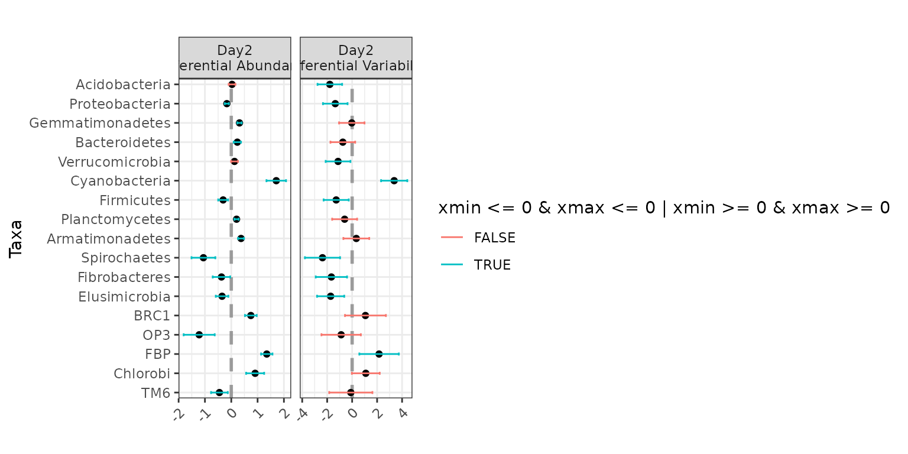

Introduction to corncob, no phyloseq
Bryan D Martin
2025-11-13
Source:vignettes/corncob-intro-no-phyloseq.Rmd
corncob-intro-no-phyloseq.RmdVignette Information
This is a version of the corncob-intro.Rmd vignette that
does not rely on the package phyloseq. To see how to use
corncob with phyloseq objects, or to see an
additional analysis with an IBD microbiome dataset, check out the
original corncob-intro.Rmd vignette.
We thank Dr. Thea Whitman for kindly providing us with the example data set we use for this vignette. You can read more about this data in Whitman, Thea, et al. “Dynamics of microbial community composition and soil organic carbon mineralization in soil following addition of pyrogenic and fresh organic matter.” The ISME Journal 10.12 (2016): 2918.
Introduction
Effectively modeling microbial relative abundance poses a number of statistical challenges, including:Here, we introduce corncob, an individual taxon
regression model that uses abundance tables and sample data.
corncob is able to model differential abundance and
differential variability, and addresses each of the challenges presented
above.
Install corncob using:
remotes::install_github("statdivlab/corncob")To begin, we load our example data set we load our example data set as three different data frames
library(corncob)
library(magrittr)
data(soil_phylo_sample)
data(soil_phylo_otu)
data(soil_phylo_taxa)We can see that we have 5 sample variables. Let’s look at the first few observations.
head(soil_phylo_sample)## Plants DayAmdmt Amdmt ID Day
## S009 1 01 1 D 0
## S204 1 21 1 D 2
## S112 0 11 1 B 1
## S247 0 22 2 F 2
## S026 0 00 0 A 0
## S023 1 00 0 C 0Additionally, we have a table that gives us counts of the phyla by sample. Let’s take a look at the first 5 phyla and the first 5 samples.
soil_phylo_otu[1:5, 1:5]## S009 S204 S112 S247 S026
## OTU.43 350 74 300 70 43
## OTU.2 1796 4204 1752 695 945
## OTU.187 280 709 426 100 139
## OTU.150 33 151 18 13 28
## OTU.91 0 0 184 0 0Finally, we have a taxonomy table with 7 taxonomic ranks.
soil_phylo_taxa[1:3, ]## Kingdom Phylum Class Order
## OTU.43 "Bacteria" "Nitrospirae" "Nitrospira" "Nitrospirales"
## OTU.2 "Bacteria" "Proteobacteria" "Alphaproteobacteria" "Rhizobiales"
## OTU.187 "Bacteria" "Acidobacteria" "Acidobacteriia" "Acidobacteriales"
## Family Genus Species
## OTU.43 "Nitrospiraceae" "Nitrospira" ""
## OTU.2 "Bradyrhizobiaceae" "Bradyrhizobium" ""
## OTU.187 "Koribacteraceae" "" ""Fitting a Model
First, let’s subset our samples to only include those with the
DayAmdmt covariate equal to 11 or 21 and then collapse the
samples to the phylum level. We have already done this and saved the
resulting sample data frame and otu data frame.
data(soil_phylum_small_sample)
sample_data <- soil_phylum_small_sample
data(soil_phylum_small_otu)
data <- soil_phylum_small_otuNote that collapsing the samples is not necessary, and this model can work at any taxonomic rank. However, we will later be fitting a model to every taxa. We can see that by agglomerating taxa to the phylum level, we have gone from from 7770 to 40 taxa. Thus we collapse in order to increase the speed for the purposes of this tutorial.
Now we fit our model. We will demonstrate with Proteobacteria. We will need to make a data frame that includes our sample data as well as the Proteobacteria counts and sequencing depths for each sample.
For now, we will not include any covariates, so we use
~ 1 as our model formula responses.
Interpreting a Model
First, let’s plot the data with our model fit on the relative abundance scale. To do this, we simply type:
plot(corncob, B = 50)
You can access the documentation for this plotting function by typing
?plot.bbdml into the console.
The points represent the relative abundances. The bars represent the
95% prediction intervals for the observed relative abundance by sample.
The parameter B determines the number of bootstrap
simulations used to approximate the prediction intervals. For purposes
of this tutorial, we use a small value B = 50 for
computational purposes, but recommend a higher setting for more accurate
intervals, such as the default B = 1000.
Now let’s look at the same plot, but on the counts scale with 95%
prediction intervals (since counts is not a parameter). To do this, we
add the option total = TRUE to our plotting code.
plot(corncob, total = TRUE, B = 50)
Finally, let’s color the plot by the DayAmdmt covariate.
To do this, we add the option color = "DayAmdmt" to our
plotting code.
plot(corncob, total = TRUE, color = "DayAmdmt", B = 50)
plot(corncob, color = "DayAmdmt", B = 50)
Notice that this plot also reorders our samples so that groups appear together so that they are easier to compare.
We can observe on this plot that it might be of interest to
distinguish between the two groups with covariates. The average
empirical relative abundance for the samples with
DayAmdmt = 21 tends to be lower and less variable than the
samples with DayAmdmt = 11.
Adding covariates
Let’s try modeling the expected relative abundance and the
variability of the counts with DayAmdmt as a covariate. We
do this by modifying formula and phi.formula
as:
corncob_da <- bbdml(formula = cbind(W, M - W) ~ DayAmdmt,
phi.formula = ~ DayAmdmt,
data = pro_data)Let’s also plot this data on both the total count and relative abundance scales.
plot(corncob_da, color = "DayAmdmt", total = TRUE, B = 50)
plot(corncob_da, color = "DayAmdmt", B = 50)
Visually, the model with covariates seems to provide a much better fit to the data, but how can we compare the two models statistically?
Model Selection
Let’s use a likelihood ratio test to select our final model for this taxon. We want to test the null hypothesis that the likelihood of the model with covariates is equal to the likelihood of the model without covariates. To do this test, we use:
lrtest(mod_null = corncob, mod = corncob_da)## [1] 4.550571e-05We obtain a p-value much smaller than a cut-off of 0.05. Therefore we conclude that there is a statistically significant difference in the likelihood of the two models. Thus, we probably want to use the model with covariates for this taxon.
Parameter Interpretation
Now that we have chosen our model, let’s interpret our model output. To see a summary of the model, type:
summary(corncob_da)##
## Call:
## bbdml(formula = cbind(W, M - W) ~ DayAmdmt, phi.formula = ~DayAmdmt,
## data = pro_data)
##
##
## Coefficients associated with abundance:
## Estimate Std. Error t value Pr(>|t|)
## (Intercept) -0.44595 0.03604 -12.375 7.18e-13 ***
## DayAmdmt21 -0.16791 0.04067 -4.129 0.000297 ***
## ---
## Signif. codes: 0 '***' 0.001 '**' 0.01 '*' 0.05 '.' 0.1 ' ' 1
##
##
## Coefficients associated with dispersion:
## Estimate Std. Error t value Pr(>|t|)
## (Intercept) -5.3077 0.3537 -15.008 6.44e-15 ***
## DayAmdmt21 -1.3518 0.5029 -2.688 0.012 *
## ---
## Signif. codes: 0 '***' 0.001 '**' 0.01 '*' 0.05 '.' 0.1 ' ' 1
##
##
## Log-likelihood: -286.53This output will look familiar if you have done regression analysis in R in the past. Covariates associated with the expected relative abundance are presented separately from covariates associated with the variance of the counts are preceded by.
From this model summary, we can see that the DayAmdmt21
abundance coefficient is negative and statistically significant. This
suggests that this taxon is differentially-abundant across
DayAmdmt, and that samples with DayAmdmt = 21
are expected to have a lower relative abundance. This matches what we
saw from the observed abundances.
We can also see that the DayAmdmt21 dispersion
coefficient is negative and statistically significant. This suggests
that this taxon is differentially-variable across DayAmdmt,
and that samples with DayAmdmt = 21 are expected to have a
lower variability. This matches what we saw from the observed
abundances.
Analysis for Multiple Taxa
What if we want to test all the taxa in our data to see if they are
differentially-abundant or differentially-variable? We use the
differentialTest function. It will perform the above tests
on all taxa, and it will control the false discovery rate to account for
multiple comparisons.
Next, we use the differentialTest command. We specify
the covariates of our model using formula and
phi.formula as before, except we no longer include the
response term because we are testing multiple taxa. We also specify
which covariates we want to test for by removing them in the
formula_null and phi.formula_null
arguments.
The difference between the formulas and the null version of the
formulas are the variables that we test. We will go through several
examples, starting with a test for differential abundance across the
DayAmdmt coefficient.
We set fdr_cutoff to be our controlled false discovery
rate.
Here, we will pass in our entire count table for all phyla as the
data argument (setting taxa_are_rows to
TRUE), and the sample data frame as the
sample_data argument.
set.seed(1)
da_analysis <- differentialTest(formula = ~ DayAmdmt,
phi.formula = ~ DayAmdmt,
formula_null = ~ 1,
phi.formula_null = ~ DayAmdmt,
test = "Wald", boot = FALSE,
data = data,
sample_data = sample_data,
taxa_are_rows = TRUE,
fdr_cutoff = 0.05)We can see the output of the function by calling it:
da_analysis## Object of class differentialTest
##
## $p: p-values
## $p_fdr: FDR-adjusted p-values
## $significant_taxa: taxa names of the statistically significant taxa
## $significant_models: model summaries of the statistically significant taxa
## $all_models: all model summaries
## $restrictions_DA: covariates tested for differential abundance
## $restrictions_DV: covariates tested for differential variability
## $discriminant_taxa_DA: taxa for which at least one covariate associated with the abundance was perfectly discriminant
## $discriminant_taxa_DV: taxa for which at least one covariate associated with the dispersion was perfectly discriminant
##
## plot( ) to see a plot of tested coefficients from significant taxaWe can see a list of differentially-abundant taxa using:
da_analysis$significant_taxa## [1] "Proteobacteria" "Gemmatimonadetes" "Bacteroidetes" "Cyanobacteria"
## [5] "Firmicutes" "Planctomycetes" "Armatimonadetes" "Spirochaetes"
## [9] "Elusimicrobia" "BRC1" "OP3" "FBP"
## [13] "Chlorobi" "TM6"In this case, we identified 14 taxa that are differentially-abundant
across DayAmdmt (out of the 39 taxa tested).
We can see a list of differentially-variable taxa using:
set.seed(1)
dv_analysis <- differentialTest(formula = ~ DayAmdmt,
phi.formula = ~ DayAmdmt,
formula_null = ~ DayAmdmt,
phi.formula_null = ~ 1,
test = "LRT", boot = FALSE,
data = data,
sample_data = sample_data,
taxa_are_rows = TRUE,
fdr_cutoff = 0.05)
dv_analysis$significant_taxa## [1] "Acidobacteria" "Cyanobacteria" "Spirochaetes" "Elusimicrobia"
## [5] "FBP"In this case, we identified 5 taxa that are differentially-variable
across DayAmdmt (out of the 40 taxa tested).
We can examine a subset of the p-values of our tests using:
da_analysis$p[1:5]## Acidobacteria Proteobacteria Gemmatimonadetes Actinobacteria
## 6.509417e-01 3.642734e-05 3.270448e-13 3.703095e-01
## [Thermi]
## 1.031419e-01We can examine a subset of the p-values after controlling for the false discovery rate using:
da_analysis$p_fdr[1:5]## Acidobacteria Proteobacteria Gemmatimonadetes Actinobacteria
## 7.811301e-01 1.457094e-04 3.924537e-12 5.172748e-01
## [Thermi]
## 2.062838e-01where the values are now adjusted to control the false discovery rate at 0.05.
Now we can use the built-in plotting function in corncob to view the
the model coefficients used in testing differential abundance across
DayAmdmt via the plot() function. You can
access the documentation for this plotting function by typing
?plot.differentialTest into the console.
plot(da_analysis)
Here, we can see that for Bacteria_Armatimonadetes, the
effect of DayAmdmt21 is positive compared to the baseline
(in this case, DayAmdmt11).
If you wish to instead make your own custom plots with these same
coefficients, you can easily extract the data used to generate the plots
above from the plot function by setting
data_only = TRUE:
df <- plot(da_analysis, data_only = TRUE)
# we can easily remove special characters used in our formatting steps
df <- df %>%
dplyr::mutate(variable = gsub("\nDifferential Abundance", "",
variable, fixed = TRUE))
head(df)## x xmin xmax taxa variable
## 1 -0.1679129 -0.24761731 -0.08820844 Proteobacteria DayAmdmt21
## 2 0.3119623 0.22800588 0.39591870 Gemmatimonadetes DayAmdmt21
## 3 0.2306765 0.09148981 0.36986312 Bacteroidetes DayAmdmt21
## 4 1.7090454 1.33732670 2.08076404 Cyanobacteria DayAmdmt21
## 5 -0.3087530 -0.49665466 -0.12085125 Firmicutes DayAmdmt21
## 6 0.2013158 0.11895313 0.28367838 Planctomycetes DayAmdmt21Finally, we can see a list of any taxa for which we were not able to fit a model using:
## [1] "GN04" "GN02" "MVP-21"In this case, we weren’t able to fit GN04 automatically.
It’s worthwhile to investigate the OTU individually if this is the
case.
It may be that the model is overparameterized because there aren’t enough observations, or it may just be that the initializations were invalid for that taxa and it needs to be re-evaluated with new initializations.
Let’s first try examining the data.
data["GN04", ]## S204 S112 S134 S207 S202 S139 S122 S212 S117 S104 S214 S109 S217 S229 S132
## GN04 0 0 0 0 0 0 0 0 0 0 0 0 0 0 0
## S209 S227 S107 S237 S224 S127 S137 S114 S124 S119 S219 S232 S129 S102 S234
## GN04 0 0 0 0 0 0 0 0 0 0 0 0 0 1 0
## S222 S239
## GN04 0 0We see that the observed counts of OTU is zero in all samples except
for S102, where we observed a single count. We should be
skeptical of any statistical model fit on a single
observed count!
corncob is stable, but if you notice any issues, please
log them on
Github to help us help you!
Examples of Answering Scientific Questions
We will now walk through several scientific questions of interest and
show how they can be answered using hypothesis testing with
corncob. Note that Day and Amdmt
are both factor covariates with levels 0, 1, and 2.
Note that some of these are rather strange tests, and shown for
demonstration of the flexibility of the model only. Normally, when
testing for differential variability across a covariate, we recommend
always controlling for the effect of that covariate on the abundance. We
first demonstrate examples with the small version of the soil dataset
(note, this is a slightly different subset of the data from that used in
corncob-intro.Rmd).
Testing for differential abundance across Day, without
controlling for anything else:
ex1 <- differentialTest(formula = ~ Day,
phi.formula = ~ 1,
formula_null = ~ 1,
phi.formula_null = ~ 1,
data = data,
taxa_are_rows = TRUE,
sample_data = sample_data,
test = "Wald", boot = FALSE,
fdr_cutoff = 0.05)
plot(ex1)
Testing for differential abundance across Day,
controlling for the effect of Day on dispersion:
ex2 <- differentialTest(formula = ~ Day,
phi.formula = ~ Day,
formula_null = ~ 1,
phi.formula_null = ~ Day,
data = data,
taxa_are_rows = TRUE,
sample_data = sample_data,
test = "Wald", boot = FALSE,
fdr_cutoff = 0.05)
plot(ex2)
Jointly testing for differential abundance and differential
variability across Day:
ex3 <- differentialTest(formula = ~ Day,
phi.formula = ~ Day,
formula_null = ~ 1,
phi.formula_null = ~ 1,
data = data,
taxa_are_rows = TRUE,
sample_data = sample_data,
test = "Wald", boot = FALSE,
fdr_cutoff = 0.05)
plot(ex3)
More examples of answering scientific questions with a larger subset
of this soil data set and with an IBD data set can be seen in
corncob-intro.Rmd.